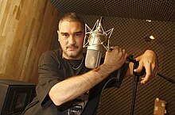

<main>

    
    <aside>
        <section align="center">
            <h2>Kase.O</h2>
            <figure>
                
            </figure>
            <h2>Información personal</h2>
            <ul>
                <li><strong>Nombre de nacimiento:</strong> Javier Ibarra Ramos</li>
                <li><strong>Nacimiento:</strong> 1 de marzo de 1980 (45 años), Zaragoza, España</li>
                <li><strong>Nacionalidad:</strong> Española</li>
            </ul>
        </section>

        <section>
            <h2>Información profesional</h2>
            <ul>
                <li><strong>Ocupación:</strong> rapero, compositor, músico</li>
                <li><strong>Años activo:</strong> 1993 - presente</li>
                <li><strong>Seudónimo:</strong> Kase O, Javat, Javato Jones, Kaos, Jodeculos Ibarra, La palmera que se dobla pero aguanta el huracán</li>
                <li><strong>Géneros:</strong> Hip hop, rap hardcore, rap político, jazz rap y funk</li>
                <li><strong>Instrumento:</strong> Voz</li>
                <li><strong>Discográfica:</strong> Rap Solo</li>
            </ul>
        </section>
    </aside>


    <section>
        <article>
        </article>
    </section>

</main>
